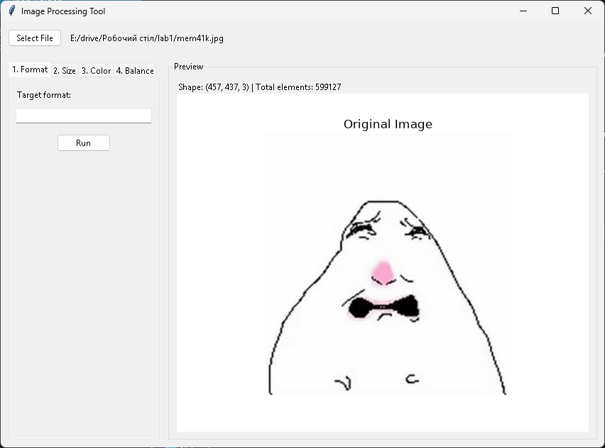
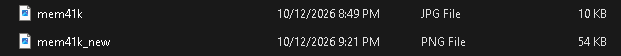
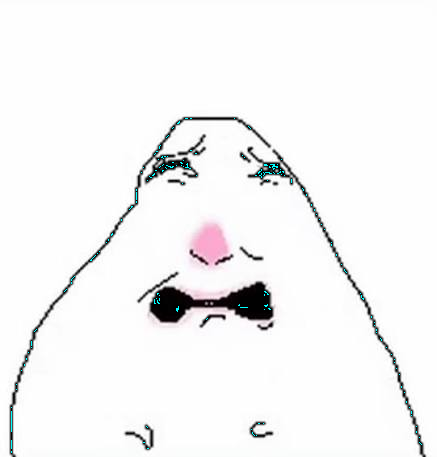
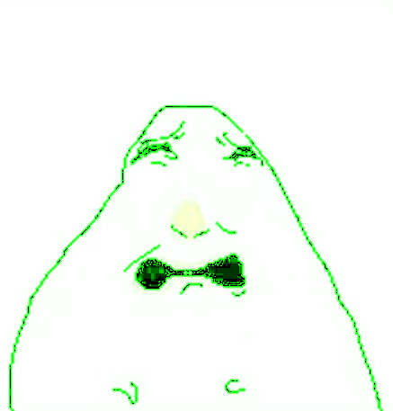
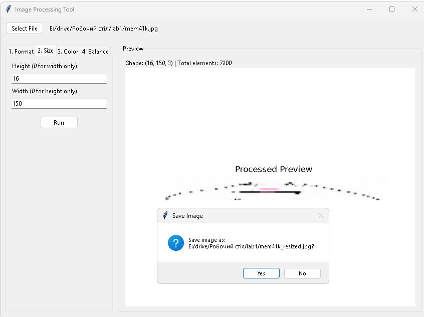

ЗВІТ
Тема: розробка програми для обробки зображень: конвертація форматів, зміна розміру, перетворення кольорів та корекція колірного балансу.
Тема: Створення інструменту обробки растрових зображень з використанням GUI-бібліотеки tkinter та інструментів обробки даних NumPy, scikit-image, matplotlib.
Мета: Практичне освоєння методів маніпулювання колірними каналами, геометрією та форматами растрових зображень у Python.
tiff, bmp, gif, png, jpg, jpeg) з урахуванням наявності альфа-каналу (прозорості).import tkinter as tk
from tkinter import ttk, filedialog, messagebox
import numpy as np
from matplotlib import pyplot as plt
from matplotlib.backends.backend_tkagg import FigureCanvasTkAgg
from skimage.io import imread, imsave
from skimage.transform import resize
def show_and_save_gui(image_array: np.ndarray, file_name: str, canvas_frame, info_label, save: bool = True):
for widget in canvas_frame.winfo_children():
widget.destroy()
fig, ax = plt.subplots(figsize=(5, 4))
ax.imshow(image_array)
ax.axis("off")
ax.set_title("Preview")
canvas = FigureCanvasTkAgg(fig, master=canvas_frame)
canvas.draw()
canvas.get_tk_widget().pack(fill=tk.BOTH, expand=True)
plt.close(fig)
info_label.config(text=f"Shape: {image_array.shape} | Total elements: {image_array.size}")
if save and file_name:
if messagebox.askyesno("Save Image", f"Save image as:\n{file_name}?"):
imsave(file_name, image_array)
messagebox.showinfo("Success", f"Saved as: {file_name}")
def image_format_conversion(image_name: str, conversion_format: str, canvas_frame, info_label):
conversion_format = conversion_format.lstrip(".").lower()
new_file_name = f"{image_name.rsplit('.', 1)[0]}_new.{conversion_format}"
image_array = imread(image_name)
converted_array = image_array.copy()
if converted_array.ndim == 3 and converted_array.shape[2] == 4:
if conversion_format not in ["png", "gif"]:
converted_array = converted_array[:, :, :3]
show_and_save_gui(converted_array, new_file_name, canvas_frame, info_label)
def image_size_conversion(image_name: str, width: int, height: int, canvas_frame, info_label):
image_array = imread(image_name)
target_h = max(1, int(height))
target_w = max(1, int(width))
resized_array = resize(image_array, (target_h, target_w), preserve_range=True, anti_aliasing=False).astype(np.uint8)
new_file_name = f"{image_name.rsplit('.', 1)[0]}_resized.{image_name.rsplit('.', 1)[1]}"
show_and_save_gui(resized_array, new_file_name, canvas_frame, info_label)
def image_size_conversion_height(image_name: str, height: float, canvas_frame, info_label):
image_array = imread(image_name)
h, w = image_array.shape[:2]
new_height = max(1, int(height))
new_width = max(1, int((w / h) * new_height))
resized_array = resize(image_array, (new_height, new_width), preserve_range=True, anti_aliasing=False).astype(np.uint8)
new_file_name = f"{image_name.rsplit('.', 1)[0]}_resized.{image_name.rsplit('.', 1)[1]}"
show_and_save_gui(resized_array, new_file_name, canvas_frame, info_label)
def image_size_conversion_width(image_name: str, width: float, canvas_frame, info_label):
image_array = imread(image_name)
h, w = image_array.shape[:2]
new_width = max(1, int(width))
new_height = max(1, int((h / w) * new_width))
resized_array = resize(image_array, (new_height, new_width), preserve_range=True, anti_aliasing=False).astype(np.uint8)
new_file_name = f"{image_name.rsplit('.', 1)[0]}_resized.{image_name.rsplit('.', 1)[1]}"
show_and_save_gui(resized_array, new_file_name, canvas_frame, info_label)
def image_change(image_name: str, target_color: np.ndarray, replacement_color: np.ndarray, canvas_frame, info_label):
base_name, ext = image_name.rsplit(".", 1)
new_file_name = f"{base_name}_color_change.{ext}"
img = imread(image_name)
img_modified = img.copy()
target = np.array(target_color, dtype=img.dtype)
replacement = np.array(replacement_color, dtype=img.dtype)
mask = np.all(img_modified[:, :, :3] == target, axis=-1)
img_modified[mask, :3] = replacement
show_and_save_gui(img_modified, new_file_name, canvas_frame, info_label)
def color_balance_corection(image_name: str, r: float, g: float, b: float, canvas_frame, info_label):
base_name, ext = image_name.rsplit(".", 1)
new_file_name = f"{base_name}_color_balance.{ext}"
image_array = imread(image_name).astype(np.float32)
if image_array.ndim == 3:
image_array[:, :, 0] *= r
image_array[:, :, 1] *= g
image_array[:, :, 2] *= b
image_array = np.clip(image_array, 0, 255).astype(np.uint8)
show_and_save_gui(image_array, new_file_name, canvas_frame, info_label)
class App:
def __init__(self, root):
self.root = root
self.root.title("Image Processing Tool")
self.root.geometry("850x600")
self.image_path = ""
file_frame = ttk.Frame(root, padding=10)
file_frame.pack(fill=tk.X)
ttk.Button(file_frame, text="Select File", command=self.select_file).pack(side=tk.LEFT)
self.lbl_file = ttk.Label(file_frame, text="No file selected", padding=(10, 0))
self.lbl_file.pack(side=tk.LEFT)
main_frame = ttk.Frame(root, padding=10)
main_frame.pack(fill=tk.BOTH, expand=True)
self.notebook = ttk.Notebook(main_frame)
self.notebook.pack(side=tk.LEFT, fill=tk.Y, padx=(0, 10))
preview_frame = ttk.LabelFrame(main_frame, text="Preview", padding=10)
preview_frame.pack(side=tk.RIGHT, fill=tk.BOTH, expand=True)
self.lbl_info = ttk.Label(preview_frame, text="")
self.lbl_info.pack(anchor=tk.W)
self.canvas_frame = ttk.Frame(preview_frame)
self.canvas_frame.pack(fill=tk.BOTH, expand=True)
self._init_format_tab()
self._init_size_tab()
self._init_color_tab()
self._init_balance_tab()
def select_file(self):
path = filedialog.askopenfilename(
filetypes=[("Image files", "*.jpg *.jpeg *.png *.bmp *.tiff *.gif"), ("All files", "*.*")]
)
if path:
try:
self.image_path = path
self.lbl_file.config(text=path)
image_array = imread(path)
show_and_save_gui(image_array, path, self.canvas_frame, self.lbl_info, save=False)
except Exception as e:
messagebox.showerror("Error", f"Failed to open image:\n{e}")
def _check_file(self):
if not self.image_path:
messagebox.showerror("Error", "Please select a file first!")
return False
return True
def _init_format_tab(self):
tab = ttk.Frame(self.notebook, padding=10)
self.notebook.add(tab, text="1. Format")
ttk.Label(tab, text="Target format:").pack(anchor=tk.W, pady=5)
self.ent_format = ttk.Entry(tab)
self.ent_format.pack(fill=tk.X, pady=5)
ttk.Button(tab, text="Run", command=self._run_format).pack(pady=10)
def _run_format(self):
if not self._check_file(): return
fmt = self.ent_format.get().strip()
valid_formats = ["tiff", "bmp", "gif", "png", "jpg", "jpeg"]
if fmt.lower() not in valid_formats:
messagebox.showerror("Error", f"Invalid format! Allowed: {', '.join(valid_formats)}")
return
image_format_conversion(self.image_path, fmt, self.canvas_frame, self.lbl_info)
def _init_size_tab(self):
tab = ttk.Frame(self.notebook, padding=10)
self.notebook.add(tab, text="2. Size")
ttk.Label(tab, text="Height (0 for width only):").pack(anchor=tk.W)
self.ent_h = ttk.Entry(tab)
self.ent_h.insert(0, "0")
self.ent_h.pack(fill=tk.X, pady=5)
ttk.Label(tab, text="Width (0 for height only):").pack(anchor=tk.W)
self.ent_w = ttk.Entry(tab)
self.ent_w.insert(0, "0")
self.ent_w.pack(fill=tk.X, pady=5)
ttk.Button(tab, text="Run", command=self._run_size).pack(pady=10)
def _run_size(self):
if not self._check_file(): return
try:
h = float(self.ent_h.get())
w = float(self.ent_w.get())
except ValueError:
messagebox.showerror("Error", "Enter numeric values!")
return
if h != 0 and w != 0:
image_size_conversion(self.image_path, int(w), int(h), self.canvas_frame, self.lbl_info)
elif h == 0 and w != 0:
image_size_conversion_width(self.image_path, w, self.canvas_frame, self.lbl_info)
elif h != 0 and w == 0:
image_size_conversion_height(self.image_path, h, self.canvas_frame, self.lbl_info)
else:
messagebox.showwarning("Warning", "Write at least one parameter!")
def _init_color_tab(self):
tab = ttk.Frame(self.notebook, padding=10)
self.notebook.add(tab, text="3. Color")
ttk.Label(tab, text="Original RGB (e.g. 255 0 0):").pack(anchor=tk.W)
self.ent_target = ttk.Entry(tab)
self.ent_target.insert(0, "255 0 0")
self.ent_target.pack(fill=tk.X, pady=5)
ttk.Label(tab, text="New RGB (e.g. 0 255 0):").pack(anchor=tk.W)
self.ent_replace = ttk.Entry(tab)
self.ent_replace.insert(0, "0 255 0")
self.ent_replace.pack(fill=tk.X, pady=5)
ttk.Button(tab, text="Run", command=self._run_color).pack(pady=10)
def _run_color(self):
if not self._check_file(): return
try:
target = np.array(self.ent_target.get().split(), dtype=int)
replacement = np.array(self.ent_replace.get().split(), dtype=int)
except ValueError:
messagebox.showerror("Error", "Invalid RGB format!")
return
image_change(self.image_path, target, replacement, self.canvas_frame, self.lbl_info)
def _init_balance_tab(self):
tab = ttk.Frame(self.notebook, padding=10)
self.notebook.add(tab, text="4. Balance")
ttk.Label(tab, text="Red factor (e.g. 1.2):").pack(anchor=tk.W)
self.ent_r = ttk.Entry(tab)
self.ent_r.insert(0, "1.0")
self.ent_r.pack(fill=tk.X, pady=2)
ttk.Label(tab, text="Green factor (e.g. 1.0):").pack(anchor=tk.W)
self.ent_g = ttk.Entry(tab)
self.ent_g.insert(0, "1.0")
self.ent_g.pack(fill=tk.X, pady=2)
ttk.Label(tab, text="Blue factor (e.g. 0.8):").pack(anchor=tk.W)
self.ent_b = ttk.Entry(tab)
self.ent_b.insert(0, "1.0")
self.ent_b.pack(fill=tk.X, pady=2)
ttk.Button(tab, text="Run", command=self._run_balance).pack(pady=10)
def _run_balance(self):
if not self._check_file(): return
try:
r = float(self.ent_r.get())
g = float(self.ent_g.get())
b = float(self.ent_b.get())
except ValueError:
messagebox.showerror("Error", "Enter numeric values!")
return
color_balance_corection(self.image_path, r, g, b, self.canvas_frame, self.lbl_info)
if __name__ == "__main__":
root = tk.Tk()
app = App(root)
root.mainloop()
Рис. 1. Головне вікно програми після вибору вихідного файлу

Рис. 2. Конвертація формату зображення (вкладка «1. Format»)

Рис. 3. Зміна розмірів із збереженням пропорцій (вкладка «2. Size»)
Рис. 4. Результат заміни RGB-кольору (вкладка «3. Color»)

Рис. 5. Корекція колірного балансу каналів R, G, B (вкладка «4. Balance»)

Рис. 6. Діалогове вікно підтвердження збереження обробленого файлу

Під час виконання лабораторної роботи було створено програмний інструмент на мові Python для базової обробки растрових зображень.
У ході роботи розроблено графічний інтерфейс користувача з використанням бібліотеки tkinter, реалізовано алгоритми конвертації форматів файлів з урахуванням альфа-каналу, пропорційне масштабування зображень та маскування кольорів засобами NumPy та scikit-image.